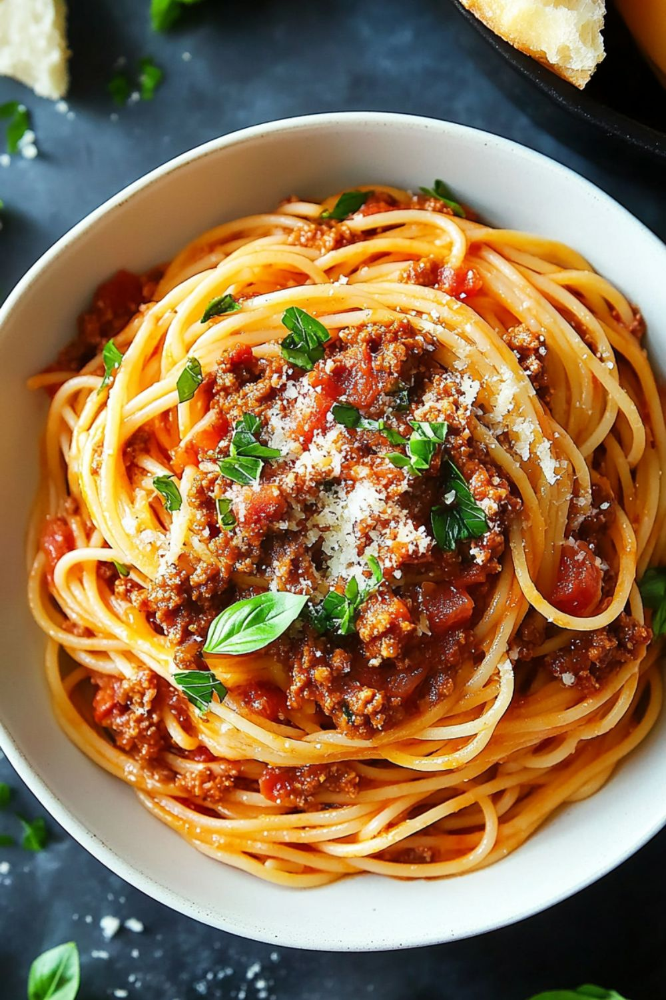

Spaghetti a la Boloñesa

Tiempo: 30 minutos | Dificultad: Fácil
Ingredientes
- 400 g de spaghetti
- 300 g de carne molida
- 1 taza de salsa boloñesa
- 1 cebolla picada
- 2 dientes de ajo
- Queso parmesano rallado
- Sal y pimienta
Preparación
- Cocer la pasta en abundante agua con sal.
- Sofreír cebolla y ajo, luego agregar la carne.
- Agregar la salsa boloñesa y cocinar 10 minutos.
- Mezclar la pasta con la salsa.
- Servir con queso parmesano por encima.